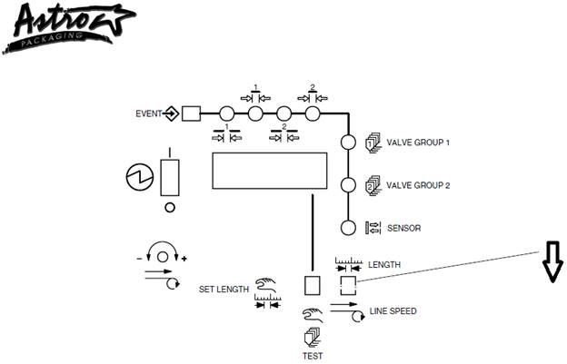
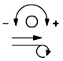
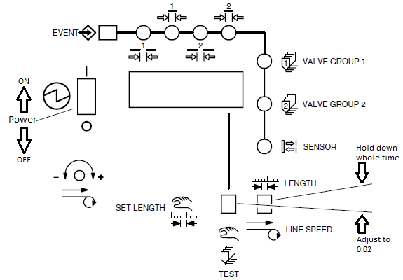

Troubleshooting Astro Glue Machine
Please, note!
ASTRO Glue Machines are
very sensitive to Air Pressure: glue pump 40psi, Glue gun 75psi.
Check and adjust for
any problem, before you do any parts change/repair/adjustment.
Moving Glue Position
The encoder most
likely is NOT the problem. Do NOT replace encoder without following
troubleshooting steps below!!
Is it only one lane (left or right only) with moving glue?
· If it is, then it is NOT encoder problem
· Check winder dancer to see if one side is fluctuating - moving up/down relative to the other, especially after roll change if the movement is in beginning of the roll.
o Check winder dancer equalizer setting is turned on and calibrated properly.
o If the dancer still moves, then the only option is to install a second fiber optic sensor on the winder – so there will be one for left lane, one for right lane.
If both lanes (left & right) are moving, then:
· Check the fiber optic sensor on winder.
o Is it counting the bags properly & consistently? – check parameters / sensor position.
o Is it damaged? – check if there is any damage to the sensor / cable.
o Is it mounted properly? – check if there is any play / loose sensor mounting (tapes)
o On some lines (7, 21) there are two fiber optic sensor (one left & one right). Check both!
· Check the line speed displayed in the glue machine. See picture below - press down on the toggle button which says . The line speed will be shown in the display in feet/min.

o Is it fluctuating more than 20 feet/min even when the winder (film speed) is constant?
1. The line speed will always have slight variation (± 10 fpm)
2. If fluctuation is more than 20 fpm, then check encoder mounting.
· Make sure the encoder is sitting properly on the idler roller without bouncing. The encoder bracket is spring loaded – check the tension.
· Make sure the idler roller is spinning freely where the encoder is mounted. Make sure the encoder is only touching one idler roller.
· Replace the O-ring for the encoder K# 15287
· Check the encoder cable and wheel if it is damaged.
· If it still fluctuates, then replace the encoder.
3. If not, then it is NOT encoder problem.
o Compare the line speed displayed with the film speed on winder. Check actual line speed by using hand tachometer directly on top of the film at winder. Do NOT use bag machine / extruder speed.
1. The line speed will always have slight variation (± 10 fpm)
2. If the speed reading from hand tachometer is different from the value displayed on the glue machine by more than 20 fpm, then you need to calibrate line speed.
· Use a small screw driver to the small potentiometer on the glue machine control panel. Turn clockwise to increase the speed, counterclockwise to decrease the speed. Try to match the reading on hand tachometer as close as possible.
3. If there is no significant difference between hand tach and glue machine display, then it is NOT encoder problem.
o Check the incoming signal (flashing LED on the glue machine display). Is there any obvious delays / inconsistency in the timing (pattern)? If so, check the wiring from winder to glue machine. The signal is a very high speed. Any loose / damaged wire will cause significant difference. Ask if you are not sure about the wiring. Do NOT modify the wiring!
o If the line speed display is flickering / flashing randomly, or displays very large number suddenly, and the glue position is moving randomly, then check the max line speed (length resolution). Follow this procedure and see picture below:
1. Turn off the pattern controller (toggle power button down).
2. Hold Length/Line Speed switch down – hold it down through step 4 below.
3. Turn on pattern controller (toggle power button up).
4. Check display if it shows 0.02.
· If it is 0.02, then it has already set correctly. Procedure ends here.
· If it is NOT 0.02, push the Set Length switch up to adjust it until 0.02
5. Release Length/Line Speed switch.
6. Recalibrate Line Speed (see “calibrate line speed” procedure above), and readjust glue position and size.
7. This is a rare case to have to adjust the resolution. It should only be set once during new machine installation and NEVER be changed to other than 0.02.

Glue Size Problems (to be added later)
·